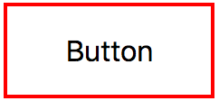
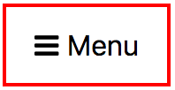
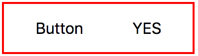
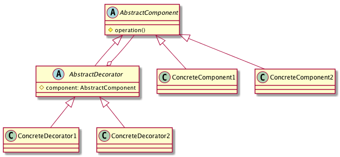
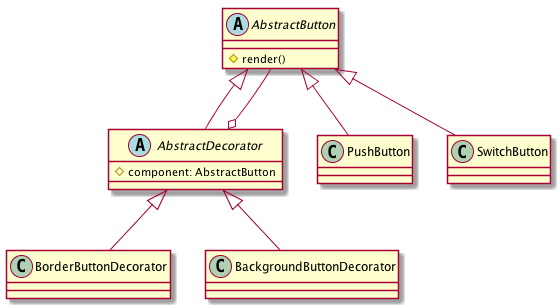

Decorator pattern in practice
2018-12-03Intro
In this post, you will see yet another implementation of the decorator pattern. This is a real implementation I used in a project, but here, I reduced and simplified the code. Imagine you don't have any css/html, UIKit, or QT framework and need to implement an UI system. In this simple post, you will implement a simple button rendering system based on OOP pattern: Decorator.
Possible situations
- Button with a text in center and a border 
- Button with an icon, a text and a border 
- Button with only a text
- Kind of a radio button, that has the main title and the radio state title (yes / no) When any of this buttons are focused - background is colored in a color (yellow), border (if any) should disappear, text should change its color to black. 
Next I will try to implement only a part af those requirements, but the implementation will leave space to extend.
Decorator pattern diagram
This is the decorator pattern in theory

Apply design
This is how current requirements get designed using decorator pattern

You can follow in code using https://www.typescriptlang.org/play/. The following code is written in typescript.
Components used in code
Secondary components used by buttons and decorator.
interface Displayable {
display();
}
class TextView implements Displayable {
display() {
console.log("<TextView>");
};
}
class Picture implements Displayable {
display() {
console.log("<Picture>")
};
}
class Box implements Displayable {
display() {
console.log("<Box>")
}
}
AbstractButton
The AbstractComponent class, it is the base for concrete buttons and decorators. BorderButtonDecorator is an AbstractButton, and it sounds strange, this is how this pattern works.
abstract class AbstractButton implements Displayable {
public display() {
console.log("<AbstractButton>")
}
}
PushButton
A concrete button, It extends AbstractButton class, and overrides display function to render what is specific to it.
class PushButton extends AbstractButton {
private textView: TextView = new TextView();
private iconView: Picture = new Picture();
public display(): void {
this.textView.display();
this.iconView.display();
}
}
AbstractDecorator
The base class for all other decorators, it extends the AbstractButton and also has reference to an AbstractButton object.
abstract class ButtonDecorator extends AbstractButton {
constructor(protected button: AbstractButton) {
super();
}
public display(): void {
this.button.display();
}
}
BorderDecorator
A concrete decorator that extends ButtonDecorator and overrides the display function to render a border. In this case, border is rendered before button is rendered, but it doesn't mean it should be always this way.
class ButtonBorderDecorator extends ButtonDecorator {
private border: Box = new Box();
display() {
this.border.display();
super.display();
}
}
UsageExample
You create a push button, then you create a decorator, sending push button in constructor. And in the end you call display on the decorator component.
let pushButton = new PushButton();
let pushButtonWithBorder = new ButtonBorderDecorator(pushButton);
pushButtonWithBorder.display();
The following log should be visible in console
press 'Run' button top right, after a new empty window is opened, right-click > inspect element > console
<Box>
<TextView>
<Picture>
More complex situations
This looks like a correct implementation of the decorator pattern, but using this solution, there are some disadvantages when using the button and decorators. When you will need to modify some properties inside button, or in a decorator, you need to keep references to all decorators and buttons. This will make code look pretty bad.
Imagine a more complex example like the following.(It will not compile because BackgroundButtonDecorator doesn't exists, but you can easily create one cloning the BorderButtonDecorator)
class LoginDialog {
loginButton = new PushButton();
registerButton = new PushButton();
forgotPasswordButton = new PushButton();
loginBorder?: ButtonBorderDecorator;
registerBorder?: ButtonBorderDecorator;
forgotPasswordBackground?: BackgroundButtonDecorator;
render(): void {
this.loginBorder = new ButtonBorderDecorator(this.loginButton);
this.registerBorder = new ButtonBorderDecorator(this.registerButton);
this.forgotPasswordBackground = new BackgroundButtonDecorator(this.forgotPasswordButton);
this.loginBorder.display();
this.registerBorder.display();
this.forgotPasswordBackground.render();
}
}
To solve this problem, there should be another class that encapsulates and hides logic of creating buttons with decorators.
DecoratedButton
A facade class that provides a single place to create and control button + decorators. Facade is just another OOP pattern
interface IButtonConstructor<T> {
new(): T;
}
class DecoratedButton<ButtonType extends AbstractButton> {
private button: ButtonType; // PushButton or SwitchButton
private borderDecorator?: ButtonBorderDecorator;
private backgroundDecorator?: ButtonBackgroundDecorator;
private finalDecoration: AbstractButton;
constructor(buttonCtor: IButtonConstructor<ButtonType>) {
this.button = new buttonCtor();
this.finalDecoration = this.button;
}
public addBorderDecorator(): void {
this.borderDecorator = new ButtonBorderDecorator(this.finalDecoration);
this.finalDecoration = this.borderDecorator;
}
public addBackgroundDecorator(): void {
this.backgroundDecorator = new ButtonBackgroundDecorator(this.finalDecoration);
this.finalDecoration = this.backgroundDecorator;
}
public render(): void {
this.finalDecoration.render();
}
}
Now whenever you will need to create a button, the code would look like this. And the result should be same.
let button = new DecoratedButton(PushButton);
button.addBorderDecorator();
button.addBackgroundDecorator();
button.render();
Conclusion
There are many advantages of using this pattern:
- Decorator pattern is a good way to make code follow open-closed principle: code for new decorations, will not be added in any of current classes, but a new class will be created.
- Whenever a change will be needed in border, for example adding round border, only one class will be modified, and it will not affect any button class.
- When a new button will be created, it will automatically have access to all decorators, and there is no need for inheritance.
But also there are some disadvantages:
- Too many classes
- After an object is decorated, there will be no way to access it from the final decoration. A reference to the original object will be needed.
Disadvantages can be hidden inside a facade object, and expose a simple interface to the client.